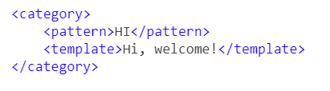

目录:
AIML (人工智能标记语言) 由Alicebot自由软件社区和Richard S. Wallace博士在1995-2000年间开发。AIML用于创建或自定义Alicebot，它是一个基于ALICE（人工语言Internet计算机实体）免费软件的聊天框应用程序。
在AIML语言中，一个category就是一组对话，category里有两个基本标签，分别是<pattern>和<template>，前者用来存放用户输入，后者用来存放响应。例如：